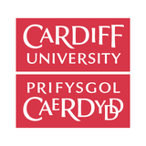
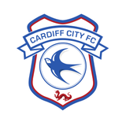

Professional Experience
Senior Research Assistant
Cardiff Metropolitan University, UK
Mar 2026 – Present
- Contributed to a multi-round stakeholder consensus process to establish clearer, more consistent decision-making criteria for a clinical care pathway.
- Supported the design of stakeholder interviews and co-design workshops to translate clinical and patient needs into a practical, deliverable programme.
- Prepared outputs that translated technical findings into practical recommendations for clinical and service-delivery partners.
- Automated data-processing workflows, reducing processing time by approximately 70% and improving operational efficiency across the wider research team.
- Led delivery of multiple concurrent research and technology projects involving more than 100 participants and 1,500+ data-collection trials, coordinating researchers, participants, technical systems and project resources across different phases of delivery.
- Led evaluation and implementation of a markerless motion-capture technology platform, establishing performance benchmarks, identifying operational requirements and informing workflow and adoption decisions.
- Worked with researchers and technical stakeholders to translate study and operational requirements into practical testing workflows, helping ensure technical systems and delivery processes met project needs.
- Contributed to the development and testing of a VR-based feedback intervention, refining the approach based on participant response, technical feasibility and research findings.
- Managed competing project priorities including participant recruitment, scheduling, technical infrastructure, data collection and project documentation across several concurrent workstreams.
Research Associate
Cardiff Metropolitan University, UK
Dec 2025 – Present
- Led evaluation of a business growth and leadership programme, analysing engagement and performance data to evidence impact for stakeholders.
- Evaluated the impact of a digital skills initiative across multiple sites, translating outcomes data into clear findings on participation and confidence.

Research Associate
Cardiff University, UK
Jan 2024 – Mar 2025
- Led the qualitative research workstream within a £1M NHS cancer prehabilitation programme, working with healthcare, academic and community stakeholders across multiple sites.
- Gathered and synthesised patient and stakeholder perspectives through qualitative research to identify barriers and opportunities for service improvement.
- Translated research findings into clear, actionable recommendations that informed service redesign, patient engagement approaches and staff training.
- Coordinated stakeholders with differing priorities and requirements, helping convert research findings and operational constraints into practical delivery actions.
- Managed site-level research activity, participant engagement, governance documentation and stakeholder communication across multiple NHS environments.
Research Assistant
University of Los Lagos, Chile
Jun 2021 – Dec 2022
- Managed longitudinal datasets containing more than 400 participant records collected across a 48-week monitoring programme.
- Developed analytical frameworks for large longitudinal datasets and translated findings into clear outputs for multidisciplinary stakeholders.
Research Assistant
Polio Australia, Australia
Jan 2020 – Dec 2022
- Analysed a decade of national health data to map long-term trends, producing evidence that directly informed public health strategy.
- Led an evaluation of intervention programmes, translating outcomes data into recommendations for practitioners and policy stakeholders.

U-21 Sports Science Intern
Cardiff City Football Club, UK
Jan 2023 – Jun 2023
- Collected and analysed performance data, translating findings into individualised, practical recommendations for coaching and support staff.
Strength & Conditioning Coach
Sports Dynamix Private Limited, India
Jun 2015 – Nov 2020
- Managed athlete testing, monitoring and programme delivery across multiple sporting environments.
- Coordinated procurement, vendor relationships, equipment installation and maintenance planning for performance and testing facilities.
- Worked directly with athletes, coaches and operational staff to understand performance needs and adapt training and monitoring approaches accordingly.
Strength & Conditioning Coach
Quantum Leap Sports Performance, India
Jan 2015 – Aug 2017
- Delivered strength and conditioning programmes for competitive athletes across multiple sports.
Education & Awards
Education
Ph.D. in Sports Biomechanics
Cardiff Metropolitan University, UK
2022 – 2026
M.Sc. in Sports Biomechanics
Loughborough University, UK
2017 – 2018
B.E. in Electrical & Electronics Engineering
Anna University, India
2011 – 2015
Professional Development
Performance Enhancement Specialization
National Academy of Sports Medicine, USA
2017 – 2018
Anatomy and Physiology
Oregon Institute of Technology, USA
2017
Exercise Physiology
Massachusetts General Hospital, USA
2016
Level 1 Strength and Conditioning
Australian Strength and Conditioning Association, Australia
2015
Scholastic Awards
Vice-Chancellor Scholarship
Cardiff Metropolitan University, UK
2022
International School Scholarship
Loughborough University, UK
2017
Best Final Year Project (Voice-Controlled Robot)
Anna University, India
2015
Runner-up, i-QUEST Annual Research Exhibition
Anna University, Chennai
2012